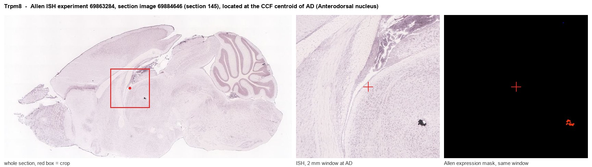
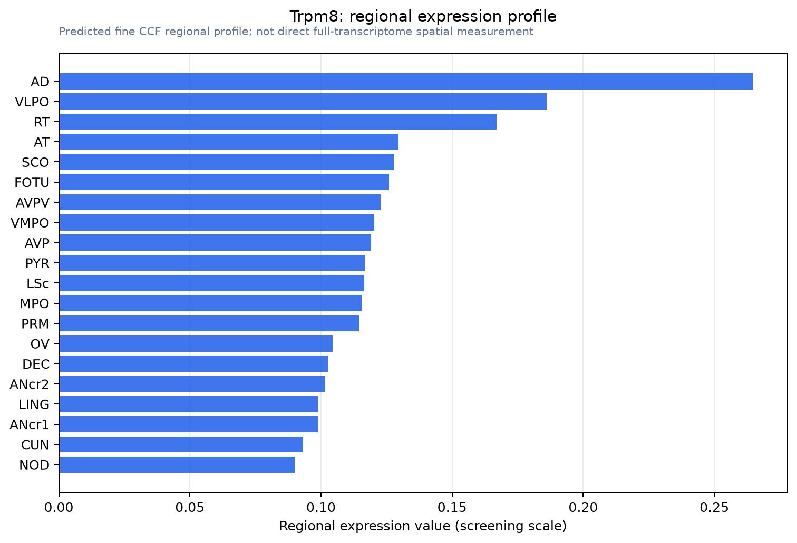

Trpm8
Transient receptor potential cation channel subfamily M member 8 (Long transient receptor potential channel 6) (LTrpC-6) (LTrpC6) (Transient receptor potential p8) (Trp-p8)
Spatial tier: RESTRICTED · Class: ION_CHANNEL · Top region: AD (Anterodorsal nucleus) · Positive regions: 22/554
Function in AD: evidence, prediction, innovation
- Gene function
- TRPM8 is a calcium-permeable, non-selective cation channel of the transient receptor potential melastatin family. It is the principal molecular cold receptor of peripheral sensory neurons, opening below roughly 26 C and also gated by menthol and icilin, with sensitivity tuned by membrane PIP2. Channel opening depolarises the cell and raises intracellular calcium.
- Region function
- The anterodorsal thalamic nucleus is the core head-direction relay of the anterior thalamus: its cells fire as a function of the animal's azimuthal heading and pass this vestibular-derived compass signal to postsubiculum and retrosplenial cortex.
- Published in this region
- inferred No region-specific literature found. Ordas et al. 2021 mapped TRPM8-expressing neurons across the rodent brain and localised central TRPM8 to hypothalamus, septum, thalamic reticular nucleus and limbic cortices, with positive fibres in the major limbic tracts but no labelling attributed to the anterodorsal nucleus.
- Predicted function
- Prediction: in AD, TRPM8 would most plausibly act not as an environmental cold sensor but as a depolarising leak conductance setting resting excitability and burst threshold in head-direction cells, offering a route by which mild body-temperature change biases directional firing gain. Knocking out Trpm8 or infusing the antagonist AMTB locally should reduce peak firing rate and alter head-direction tuning width without abolishing directional selectivity; local menthol or icilin should transiently raise AD firing and destabilise the head-direction signal during passive rotation.
- Innovation
- ★★★★★ 5/5 TRPM8 has never been examined in the anterior thalamus despite excellent genetic and pharmacological tools and a functionally well-defined, easily recorded head-direction circuit.
- Tools
- Trpm8-EGFPf and Trpm8-BAC-EYFP reporters; Trpm8-Cre and Trpm8 null mice (JAX); agonists menthol, icilin, WS-12; antagonists AMTB, M8-B, PF-05105679; anti-TRPM8 antibodies (Alomone ACC-049). AD is reachable with retrograde AAV from postsubiculum.
- References
Direct evidence located at the region

Allen ISH experiment 69863284, section image 69884646 (section 145): the section that contains the CCF centroid of Anterodorsal nucleus according to the Allen image-to-atlas alignment (reference_to_image), with a 2 mm window around that point. Left: whole section, red box = window. Middle: ISH signal. Right: Allen's expression-mask view of the same window. open this image in the Allen viewer
Direct spatial evidence

Regional expression figure

Predicted WMB × fine-CCF profile; not direct full-transcriptome spatial measurement.
Spatial profile
Evidence and specificity
- Evidence status
- PREDICTED_FINE
- Direct sources
- None; predicted localization only
- Exclusive threshold
- 12 positive regions out of 554
- Spatial specificity
- 0.321
- Top-region fraction
- 0.072
- Filter status
- PASS
Interpretation limits
- Cell-type-to-region projection is imputed expression, not direct spatial measurement.
- Adult reference atlases do not establish stability across age, sex, strain, state, or disease.
- Transcript abundance does not guarantee protein abundance or genetic-tool performance.